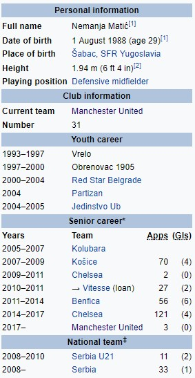

Немања Матић
Немања Матић (рођен 1. августа 1988.) је професионални фудбалер из Србије који игра као дефанзивни везни играч енглеског клуба Манчестер Јунајтеда и репрезентације Србије. Познат је по доследним наступима на терену и борбеном стилу игре. Матић је започео своју сениорску каријеру у Колубари, пре него што се придружио словачком клубу Кошице 2007. године. Прешао је у енглески клуб Челси за 1,5 милиона фунти 2009. године. Мало коришћен током прве сезоне на Стамфорд Бриџу, провео је сезону 2010-11 на позајмици у холандском клубу Витесе, а јануара 2011. године преселио се у Бенфику у договор о замени са Давидом Луизом. Освојио је награду за играча године у Примеири за своје наступе у сезони 2012-13. Матић се вратио у Челзи у јануару 2014. године, за 21 милион евра. Био је именован у ПФА Тим године за сезону 2014-15. У јулу 2017. поново је уједињен са бившим менаџером Челсија Хосеом Мурињом након потписивања за Манчестер Јунајтед. Матић је представљао Србију на нивоу испод 21 године. Направио је свој први међународни деби у 2008. и од тада је скупио преко 30 наступа.
